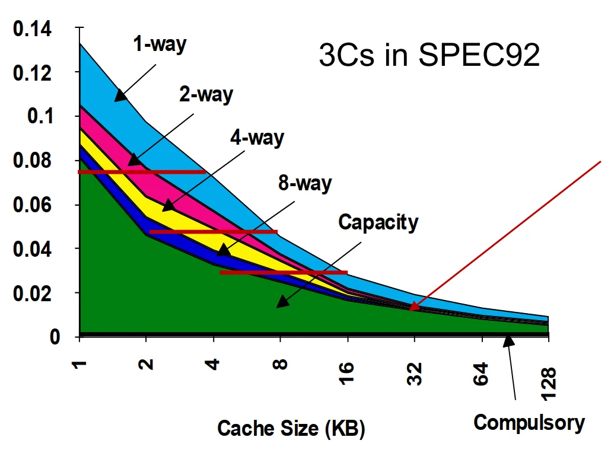
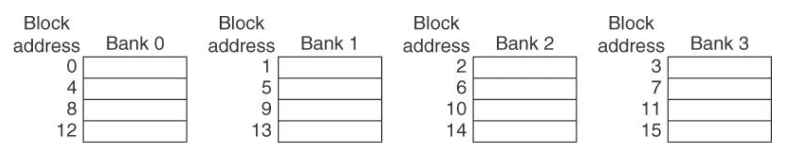
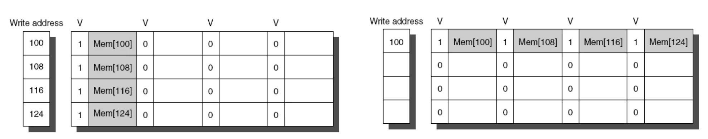
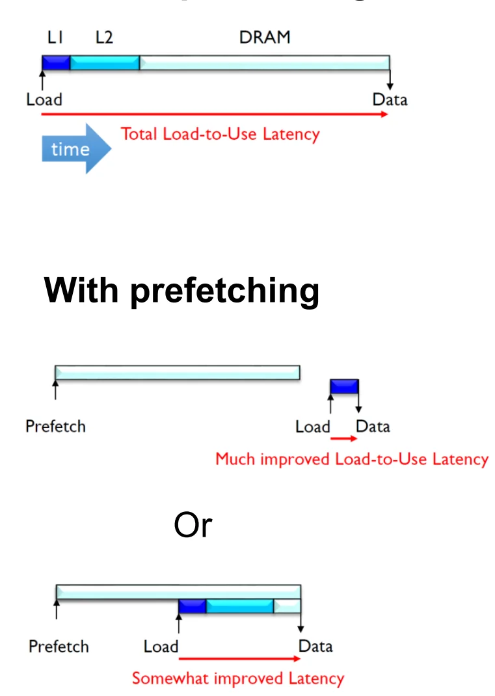
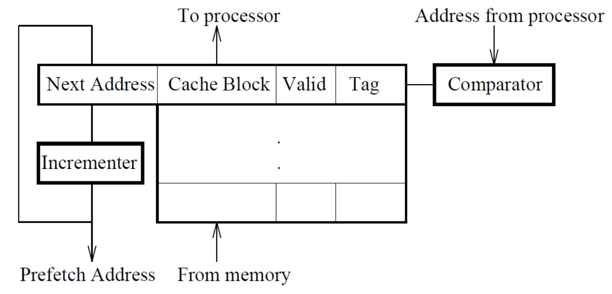
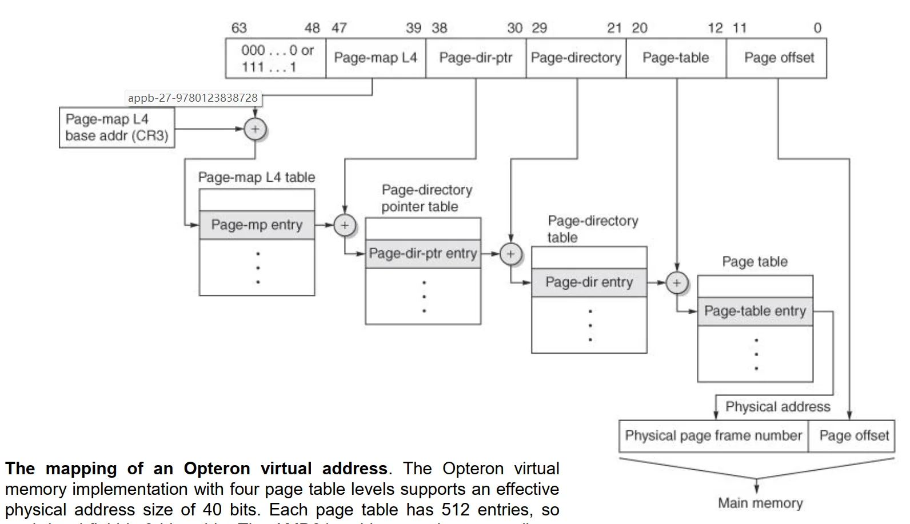

Memory Hierarchy¶
Memory Hierarchy 基础版本笔记：Memory Hierarchy Fundamentals
I. Cache Optimizations¶
1.1 6 Basic Optimizations¶
(1) Larger block size¶
在总容量固定的情况下，增大 Block Size:
- Compulsory misses 减小：因为一次加载更多数据，能够更充分地利用空间局部性
- Capacity misses 增大：因为总容量固定时，Block Size 增大必然导致 Block 数量减少，index 位减少，导致冲突概率增大；
- Conflict misses 增大；
- Miss Penalty 增加：因为发生 Miss 时，从主存搬运一整个大块的数据需要花费更长的时间。
Higher latency and larger throughput prefers large block. Lower latency and small throughput prefers small block
(2) Larger Capacity¶
- Miss Rate 减小
- Hit time 增大，因为：
- 存储阵列变大，SRAM 字线和位线更长，电阻电容负载更大，需要更长时间建立差分电压
- 如果是 Block 数量变多，即 index 位数变多：则译码树更深，组选择逻辑更复杂。地址要先译码选中目标组，再读 tag 和数据；组数越多，这部分延迟通常越大。
- 如果是相联度升高：tag 比较器数量增加、命中信号 OR 树更深、数据多路选择器（mux）输入更多、选择更慢。这些都会增加命中检测和数据选择时间。
- Cost, Power 升高
因此，增大容量通常只适用于 low-level/off-chip 缓存。
(3) Higher Associativity¶
- Miss Rate 减小
- Hit time 升高

(4) More Cache Levels¶
多级缓存的性能分析见：Multi-level Cache Performance Analysis
这里我们考虑 Multilevel Inclusion 策略和 Multilevel Exclusion 策略的差异。
对于 Multilevel Inclusion 策略
（1）如果 Block 大小不同
例如 L2 Block 大于 L1 Block，当 L2 发生替换时，由于 L2 的一个大块包含了 L1 的多个小块，L2 淘汰一个大块，就会导致 L1 中对应的多个块被连带强制失效。这会导致 L1 的 Miss Rate（缺失率）升高。因为 L1 里原本可能还有用的数据，被 L2 的替换操作无辜“连坐”踢出了。这在体系结构中被称为 Inclusion Victim。
Inclusion Victim
例如，32 位地址，两级 Direct Mapped Cache, L1 Block Size = 16B, L2 Block Size = 64B, Block 个数均为 16，即 index 均为 4 位——仅作示意。
L1 每一个 Cache Line 的 offset: addr[3:0]，而 L2 对应: addr[5:0]。
对于某一个 L1 Cache Line \(\alpha\)，完整地址：0x0000_00A*，即：Tag = {24{1'b0}}, index = 0b1010，offset = 0b****。假设该数据同时存在于 L1 和 L2 中。此外，L1 中还存在
- Cache Line \(\beta\): Tag =
{24{1'b0}}, index =0b1000，offset =0b**** - Cache Line \(\gamma\): Tag =
{24{1'b0}}, index =0b1011，offset =0b****
这三个 Cache Line 都属于 L2 中的同一个 Block A: Tag = {22{1'b0}}, index = 0b0010，offset = 0b******
现在 CPU 想要请求数据：{21{1'b0}, 1'b1, 4'b0010, 6'b100000}:
- 去 L1 寻找 index =
0b1010，找到了 Cache Line \(\alpha\)，但Tag 不一致，Miss。 - 去 L2 寻找 index =
0b0010，找到了 Block A，但 Tag 不一致，再次 Miss。 - 只能去 DRAM 中捞
从 DRAM 取回数据后，按照顺序，会依次写入 L2 和 L1。写入 L2 时，会发生替换（因为这是 Direct Mapped Cache），导致 Block A 被移走，根据 Inclusion 原则，L1 中的 Cache Line \(\alpha\)、\(\beta\)、\(\gamma\) 都会被强制失效。
本来我们只想替换掉 \(\alpha\)，这下 \(\beta\)、\(\gamma\) 也被“连坐”踢出去了——仅仅是因为它们与 \(\alpha\) 位于同一个 L2 Block 中。
（2）如果大小相同
如果 L1 和 L2 的 Block Size 相同，那么它们在数据块层面就是 1:1 的对应关系。此时没有任何“连坐”的失效问题。但是，如果 L2 的容量比较小，就会出现一个严重问题：存在大量的重复数据（因为要满足 "Inclusion"），导致 L2 实际上能提供的额外缓存容量大打折扣，非常浪费空间。此时，设计者通常会放弃包含性，转而采用“多级互斥（Multilevel exclusion）”策略（即数据要么在 L1，要么在 L2，绝不重复），以最大化总缓存容量。
(5) Read Misses over Writes¶
考虑如下架构背景：
- Direct Mapped Cache
- Write-Through 策略：即写命中时，不仅修改 Cache，还要写回主存，此时硬件结构上会采用一个 Write Buffer 来避免 CPU 被写回主存的延迟阻塞。
但是！
我们观察如下这段代码：
逐行拆解：
SW r3, 512(r0)：将r3的值写入内存地址512。由于是 Write-Through 策略，数据被放进了 Write Buffer 中，准备写回 DRAM。此时，主存中的m[512]还没有更新。LW r1, 1024(r0)：- 从内存地址
1024读数据。由于1024也映射到cache index 0，会发生 Cache Miss。 - 这个 Miss 会导致 Cache 从主存中把包含
m[1024]的数据块加载进来，覆盖掉原本在 index 0 的块。此时 Cache 中 index 0 是m[1024]的数据。
- 从内存地址
LW r2, 512(r0)：- 再次读地址
512。因为刚才 Cache index 0 已经被m[1024]占据，这次读依然发生 Cache Miss。 - 此时，CPU 会去主存中取
m[512]的数据。但是！ 第 1 条指令的SW r3, 512(r0)的数据可能还停留在 Write Buffer 里，尚未真正写入主存。 - 结果：
LW r2从主存读回来的是旧数据，导致r2的值与r3不相等（r2 != r3）。这就是典型的 Data Hazard 或 Memory Ordering 问题。
- 再次读地址
有两种解决方案保证 Cache Coherency：
- 方案 1：Read Misses 等待 Write Buufer 清空
- 做法：每次发生 Read Miss 时，CPU 停下来（Stall），一直等到 Write Buffer 里的数据全部写进主存后，再去主存取数据。
- 缺点：Long wait。这完全破坏了引入 Write Buffer 的初衷，代价极大，整个流水线会严重停顿。
- 方案 2：在发生读缺失时检查写缓冲 -> （推荐/现代架构的普遍做法）
- 做法：发生 Read Miss 时，CPU 不仅要去主存取数据，还要去 Write Buffer 里面看一眼。
- 如果 Write Buffer 里没有该读地址的数据（No conflicts），即两者不相关，那么就直接让 Read Miss 继续从主存取数据，让 Write Buffer 在后台慢慢写。
- 如果 Write Buffer 里有该读地址的数据，那就直接把数据从 Write Buffer 转发 给 CPU，或者让读操作等待该写操作完成。
- 优点：避免了长时间的等待，极大减少了不必要的停顿。这就是 Read Misses over Writes 。
- 做法：发生 Read Miss 时，CPU 不仅要去主存取数据，还要去 Write Buffer 里面看一眼。
这里触及了 Sequential Consistency (顺序一致性) 的边缘。在单核中，我们通过 Store-to-Load Forwarding 来保证程序员的视角是一致的。在多核/多处理器系统中，这种因为 Write Buffer 导致的可见性问题，就需要通过 MESI 协议、Memory Barrier（内存屏障） 等更复杂的手段来解决了。
(6) Address Translation¶
一些关于 Virtual Memory 涉及的取舍：
- First TLB or Cache?
- V index or P index?
- V tag or P tag?
1.2 10 Advanced Optimizations¶
1. Small and Simple L1 Caches¶
—— reduce hit time and power
CPU 访问 Cache 的硬件路径至少包括：
根据 index 选择正确的 set → 利用 tag 比较电路找到正确的 line → 从 line 中读取数据
因此，Low associativity 可以减少 Tag 比较电路的面积，进而减少功耗。而 High associativity 会增加 Tag 比较电路的面积与功耗，还会增加 Hit time。
但是，High associativity 在如下场景中也有用：
- Multiple Cycles: 这里指的是随着 CPU 主频越来越高，连 L1 Cache 的访问都无法在单周期来完成，通常需要 2-3 个周期。那么既然如此，相比一个 CPU 周期内做完所有事情，我们可以在第 1 个周期输出 Index 和读取 Tag，第 2 个周期进行 Tag 比较和 MUX 选择，时间裕量变大了。此时，增加相联度导致的额外延迟可以被多出来的 CPU 周期掩盖掉，Hit time 不再是瓶颈。
- TLB latency even larger: 因为 VIPT 架构中，通常根据 VPA 和 TLB 查询 PPA 以及根据 index 访问 L1 Cache 是同步进行的，TLB 访问延迟更大的话可以掩盖 L1 延迟，同时利用大 L1 减少 miss rate 的优势
- Multithreading: 见下方卡片。
High Associativity in Multithreading
核心逻辑：多线程引入了严重的“线程间冲突”，并且系统更看重吞吐量而不是单线程延迟。
问题：多线程带来的 Cache 污染。
当多个线程（比如 SMT 的两个硬件线程）同时运行在一个物理核上时，它们共享同一个 L1 Cache。如果 L1 是低相联度的（比如直接映射 Direct-mapped 或 2-way），线程 A 的数据和线程 B 的数据非常容易映射到同一个 Set 上，互相驱逐对方的数据。这种现象叫做 Thread Thrashing（线程颠簸）。
High Associativity 的作用
高相联度（比如 8-way）能够提供更多的缓存槽位。即使两个线程的物理地址碰巧映射到了同一个 Set，它们在 8 个 Way 中也能相安无事，极大地减少了因为多线程并发导致的 Conflict Misses。
延迟 vs 吞吐量的权衡：
- High Associativity 确实会增加单次命中时间（Hit Time）。在多线程环境下，单个线程的执行延迟变长了。
- 但是，多线程最大的优势是 TLP（线程级并行）。当线程 A 因为微小的 L1 命中延迟或者 Cache Miss 停顿（Stall）时，CPU 可以立刻切换去执行线程 B 的指令。这种延迟掩盖使得单个周期的增加变得微不足道。相反，如果因为低相联度导致频繁 Miss，不仅线程 A 要等，线程 B 也要去主存取数据，这会严重损害整体的吞吐量。
2. Way Prediction¶
—— reduce hit time
To improve hit time, predict the way.
核心手段是在多路 Cache 中，基于 index 预测应该访问哪一个 Way，在预测成功时显著减少 Hit time，同时避免读取所有 Way 并进行比较和大 Mux 选择。
(1) Way Prediction 的硬件电路是怎么做的？
Way Predictor 本质上是一个非常小、非常快的直接映射表（类似一个小型的 Cache 或 BTB）。它的作用是根据当前的 Cache Index，记住上一次访问这个 Set 时，命中的是哪个 Way。
它的每一个 Table Entry 包含：
- 索引（Index）：Cache 的 Index。
- 内容（Content）：1 个或多个 bit。比如对于 4-way 的 Cache，输出只需要 2 个 bit（00, 01, 10, 11 代表 4 个 Way）。
更新机制：每次 Cache 命中后，就更新这个表（记录刚刚命中的 Way）；甚至可以加入简单的 2-bit 饱和计数器来增加预测的鲁棒性（类似分支预测）。
(2) 关键路径的并行化
在传统的 Set-Associative Cache 中（假设 4-way），如果不做预测，硬件需要：
- 用 Index 找到 Set。
- 同时读出这 4 个 Way 的 Tag。
- 同时用 4 个比较器对比 Tag。
- 根据比较结果，用 1 个 4 选 1 的大 MUX（多路选择器） 选出命中的 Data。
而在 Way Prediction 架构下：
1. 用 Index 找到 Set，同时利用 index 去查 Way Predictor（这两步是并行的）。
2. Way Predictor 立刻输出一个 Predicted Way 的信号。
3. 这个信号直接作为一个 小 MUX（比如 4 选 1，但前提是只有 1 个选择信号有效）的选择信号，只把这 1 个 Way 的 Tag 和 Data 读出来。
4. 将这 1 个 Tag 与 VA 中的 Tag 进行唯一的一次比较。
1. 如果预测成功，这就是快速路径上，只需要 1 个 Tag 比较器工作。这极大地节省了功耗（不需要同时开 4 个比较器），更极大地缩短了延迟（因为不用等 4 个比较器结果出来再去控制MUX 选数据）。
2. 如果预测错了，下一个周期内，硬件立刻停止流水线（发出 Stall 信号），激活其他 Way 的 Tag 比较电路，检查数据是不是在其他 Way 里，如果在，就把数据读出来，此时还是 Way-Miss Hit Time；如果不在，那才算是 Miss Penalty。
(3) 如果预测错了，Penalty 会很大吗？
考虑如下 Way Prediction 的处理案例：
- 周期 1（预测周期）：读取了 Predicted Way 的数据和 Tag，进行比较。发现 Tag 不匹配。
- 周期 2（补救周期）：硬件立刻停止流水线（发出 Stall 信号），激活其他 Way 的 Tag 比较电路，检查数据是不是在其他 Way 里。
- 为何惩罚不大？
- 根据经验，2-way 的预测准确率 >90%，4-way >80%。这意味着大部分时间都在走快速路径。
- 一旦预测失败，相比于真正去 L2 或者主存找数据（Miss Penalty），在 L1 中换个 Way 找，只是多花 1 个时钟周期而已。
进一步，在某些高级实现（如 Alpha 21264）中，Way Predictor 甚至能告诉你具体的 Block。如果预测错了，惩罚依然只是 Way-Miss Hit Time。
Fit speculative Execution: 现代处理器是超标量乱序执行的。当 Way Prediction 发生错误时，CPU 只是在当前周期产生了一个 Bubble，或者把后续依赖该 Load 的指令打上标记重新执行。因为多线程和乱序执行可以掩盖这种微小的延迟，所以 Way Prediction 带来的功耗大幅降低和常态下 Hit Time 的缩短，其收益远大于那 1 个周期的补救代价。
3. Pipelined Cache Accesses¶
—— increase cache bandwidth
回顾早期的单周期 L1 Cache，CPU 必须在一个时钟周期内干完这几件事：
计算地址 -> 查 Index 定位 Set -> 读出所有 Way 的 Tag -> 比较 Tag -> 选出命中的 Data -> 把数据发给 CPU
这导致 Cache 的硬件路径极长，严重限制了 CPU 的最高主频。
Pipelined Cache 的意思就是将上述一连串操作分散到多个周期执行（就是类似我们之前提到的 2~3 个周期），例如：
- 第 1 周期：计算地址，查 Index；同时查 TLB。
- 第 2 周期：读出 Tag 并进行比较。
- 第 3 周期：读出数据，并通过多路选择器选出最终数据。
- 第 4 周期：数据写回寄存器。
目的：increase cache bandwidth。
由于流水线是可以重叠执行的，虽然单次访问的延迟变成了 4 个周期，但在满载时，每个周期都能吐出一个新的访问结果。这对于现代超标量CPU（每个周期要发射好几条 Load/Store 指令）来说是必须的。
优缺点分析
(1) 缺点：More cycles between load and data use（增大 load-use 之间的延迟）
- 痛点：因为 Load 指令要在 Cache 里走上 4 个周期才能拿到数据。如果紧接着下一条指令就要用这个数据（比如
ADD r1, r1, r2，其中 r2 刚被 Load），CPU 就只能Stall，或者在硬件里引入复杂的 Load-use forwarding（加载-使用数据旁路） 机制，实在绕不过去就得插气泡。 - 应对：这就要求编译器进行指令调度，在 Load 和使用之间插入一些不相关的指令；或者依靠乱序执行引擎去找其他指令填补空白。
(2) 缺点：Increases branch mis-prediction penalty（增加分支预测失败的惩罚）
- 痛点：现代 CPU 会进行深度流水线处理。如果一条分支指令预测错了，CPU 需要把流水线里做错的指令全部 Flush 掉。
- 如果 Cache 访问是 1 个周期，那么分支指令后的指令很快就能解析出结果；但如果 Cache 访问本身就要 4 个周期，那么确定分支结果（如果确定分支目标地址需要依赖内存数据）的周期数就变长了。一旦预测错，意味着有更多周期的年轻指令被浪费，惩罚显著增加。
- 应对：需要更准的分支预测器和更深的 BTB。
(3) 优点：Makes it easier to increase associativity（利好 high associativity cache）
高相联度（比如 8-way）需要 8 个 Tag 比较器并行工作，还要一个超大的 8 选 1 MUX，这会导致单周期的时钟频率上不去（关键路径太长）。
但是！既然我们已经决定把 Cache 访问拆成 2 个或 4 个周期了，那么我们就有了更多的“时间余量（Timing Slack）”，可以在：
- 第 2 个周期慢慢做 8 个 Tag 的比较
- 第 3 个周期慢慢做 8 选 1 的 MUX。
这样一来，牺牲了一点点单次访问延迟，却换来了高相联度带来的低 Miss Rate。
这是现代高主频 CPU（如 Intel Core 系列）的典型做法：L1 Cache 访问通常需要 4-5 个周期，但相联度可以做得很高（如 8-way 甚至 12-way）。
4. Non-blocking Cache¶
—— increase cahce bandwidth
概念解释：Blocking vs Non-blocking
- Blocking Cache（阻塞缓存）：只要发生一次 Cache Miss（且此时正在向下一级存储请求数据），整个 Cache 就“卡死”了。此时如果 CPU 接下来的访存是Hit 该 Cache 的，也必须等上一次 Miss 处理完才能执行。
- Non-blocking Cache（非阻塞缓存）：也叫做 Lockup-free Cache。它允许 Cache 在处理前一个 Miss 的同时，继续响应后续的 Cache 访问请求。
此外，还要区分：
- Hit under miss（Miss 期间命中）：前一个请求 Miss 了，正在等内存。下一个请求来了，刚好 Cache 里有，立刻返回给它。这样 CPU 的流水线就不需要停顿。
-
Miss under miss（Miss 期间再次 Miss）：前一个请求 Miss 了，下一个请求也 Miss 了。硬件允许把多个 Miss 请求同时发往下一级存储（L2/内存）。这就是 MLP (Memory-Level Parallelism，内存级并行)。
当然，并发数量并不是无限的，有硬件限制，即下文中的 MSHR。
但是性能很难测量。
- 如果程序本身的指令依赖性强，或者缺失率很低，非阻塞 Cache 带来的收益就很小。
- 如果程序有很好的 MLP 潜力（比如矩阵乘法、数据库遍历，能够连续发出多个不相关的 Load 指令），非阻塞 Cache 就能大显神威，把几十个周期的内存延迟完全掩盖掉。
- 因此，传统的
平均访存时间 = 命中时间 + 缺失率 × 缺失代价公式在这里失效了，因为缺失代价被多个并发请求分摊了。
硬件支撑——MSHRs
为了实现 Non-blocking，硬件上需要一个非常核心的部件：MSHRs (Miss Status Holding Registers，缺失状态保持寄存器)。可以把 MSHR 理解为一个 “正在处理中的 Miss 请求登记表”。其工作流程：
- 查表去重：来了一个新的 Cache 访问，发现 Miss 了。硬件先去 MSHR 里查一下：“这个 Block（地址）是不是已经有人正在去内存取了？”
- If pending（如果已经在取）：硬件就不再向主存发送新的请求，而是把这个新来的指令记录在这个 Block 对应的 Subentry（子条目）里。等数据从主存回来了，直接把数据通过旁路发给所有等待的指令。
- If not pending（如果没人取）：在 MSHR 里分配一个新的 Entry，向主存发送 Read 请求。
- MSHR Entry 的结构：
- Primary（主条目）：记录这个 Block 的基础信息（比如 Block 地址）。
- Subentry（子条目）：因为可能有多条指令都在等同一个 Block 的不同字节。子条目记录：目标寄存器（Register）、块内偏移（Block offset）、读写类型、数据等。
优缺点总结
优点：
- 极大幅度提升带宽与吞吐量：打破了一次只能处理一个 Miss 的限制，充分压榨内存总线带宽（MLP）。
- 容忍长延迟：完美契合现代乱序执行（OoO）处理器的特点。CPU 可以在等待内存的同时，执行其他独立指令，隐藏长延迟。
- 降低有效 Miss Penalty：并发 Miss 越多，平均每个 Miss 耗费的等效时间越短。
代价：
- 极高的硬件复杂度（面积/功耗）：
- MSHR 是一组高速寄存器（CAM 结构，需要按内容寻址），还要配套复杂的冲突检测逻辑和数据转发网络。
- MSHR 深度是有限的。如果 MSHR 塞满了，Cache 就会退化成 Blocking Cache。
- 验证与测量极其困难：由于并发执行，内存访问的顺序、数据一致性、甚至异常处理的精确性都变得极其复杂。
- 能耗增加：同时并发大量的访存请求，导致 Cache 内部和总线的动态功耗显著上升。
之前的 "Pipelined Cache Access" 技术让 Cache 每个周期都能接受新的请求。
但光能接受没用，如果遇到 Miss 就阻塞，流水线就断了。
所以，Non-blocking Caches + MSHR 就是用来承接流水线化带来的高并发请求的。它们共同构成了现代高主频、高 IPC 处理器的存储子系统基石。
5. Multibanked Caches¶
—— increase cache bandwidth
将缓存组织为独立的 banks，以支持并发访问。
与 DRAM 的 interleaving 类似，Multibanked Caches 可以采用 interleaving 的方式组织 Bank:

6. Critical Word first and Early Restart¶
—— reduce miss penalty
"Critical word first" 和 "Early restart" 两项技术解决的是同一个痛点：CPU 急着要一个 Word，但内存却慢吞吞地送来一整个 Block。这两项技术的核心目的都是为了减少 CPU 停顿的真实感知时间。
痛点在于：CPU 通常只执行一条 Load 指令，它真正需要的可能只是这个 Block 里的第 1 个字。但在传统机制下，必须等整个 64 字节的数据全部从内存传回并写入 L1 Cache 后，CPU 才能拿到它需要的那 4 个字节并恢复执行。
机制解析
假设一个 Cache Block 包含 4 个 Word（W0, W1, W2, W3）。此时 CPU 发起了一次 Load 指令，请求 W2，导致 Miss。
- Critical Word First (关键字段优先)
- 做法：既然 CPU 最急缺 W2，内存就直接跨过 W0 和 W1，先把 W2 送到总线上。
- 流程：
- Cache 向内存发出非顺序的请求。
- 内存优先返回 W2（这叫 Wrap-around burst，回卷突发传输）。
- W2 一到达，硬件立刻把它 旁路(Bypass / Forward) 给 CPU，CPU 恢复执行。
- 与此同时，内存继续送回剩下的 W3, W0, W1，硬件把它们慢慢填进 Cache Block 里。
- 硬件要求：内存控制器和总线必须支持乱序传输或回卷突发传输。
- Early Restart (尽早重启)
- 做法：内存总线按顺序传（W0 -> W1 -> W2 -> W3），在 Cache 侧转发。
- 流程：
- Cache 向内存发出正常顺序的请求。
- 内存先送回 W0、W1，硬件把它们扔进 Cache。
- 当总线传回 W2 时，硬件立刻“截胡”，把 W2 转发给 CPU，让 CPU 恢复执行。
- 剩下一个 W3 继续传回并填入 Cache。
- 硬件要求：不需要改动内存/总线协议，只需要 Cache 控制器内部增加检测逻辑（检测当前到达的 Word 是不是 CPU 想要的那个）。
优劣分析与权衡
优点
- 极大降低“表面”的 Miss Penalty：尤其是 CWF，完全省去了前面 W0, W1 的传输时间。如果去主存的一个 Word 需要 50ns，CWF 直接省下了 100ns（两个 Word 的传输时间），契合乱序执行/超长流水线。
缺点与局限性
-
对 Block 的后续访问：CPU 拿到 W2 恢复了执行，但此时 Cache 里 W0, W1 还在路上，或者根本没有。如果下一条指令立刻访问 W1，就会发生二次 Miss。
但这通常由之前介绍过的 MSHR 给挡下来（等待同一个 Block 的后续数据到达）。
-
硬件复杂度：
- CWF 需要复杂的内存控制器支持，例如需要支持 Wrap-around burst。
- 两者都需要 Cache 控制器能够支持数据旁路转发，即数据不用先写入 Cache 阵列，而是直接从总线/bypass送到 CPU 的寄存器。
- 适用场景受限：Block Size 越小（比如 32B），这两种技术节省的时间越少，收益不明显。
这两种技术在现代高主频处理器中很常见，但通常在小容量 Cache（如 L1）上因为时序太紧很少用（单周期访问来不及做旁路），而更多用在 L2 Cache 或 L3 Cache 的缺失处理上。
7. Merging Write Buffer¶
—— reduce miss penalty
基础版的 Write Buffer 存在严重的资源浪费问题，而“Merging”是一项用来“榨干” Write Buffer 效率的优化技术。
例如如下四条指令：
这四条数据很可能位于同一个 Cache Block 中。
在没有 Merging 机制的传统 Write Buffer 中，这四个写操作会占用 4 个独立的 Buffer Entry。等总线空闲时，Write Buffer 会向 L2 Cache 发起 4 次独立的写请求。
这很浪费总线带宽：明明可以一次性把整个 Block 传过去，非要分成 4 次小包传，效率极低。
因此这项技术的核心思想就是：按 Block 来组织 Write Buffer，而不是按 Word。见下图：

左图是合并前的状态，一个 Entry 只对应一个字。
右图是合并后的状态，Write Buffer 的 Entry 不再是单个字，而是一个完整的 Cache Block。地址 100 成为了这个块的基地址。100, 108, 116, 124 这四个数据被合并到了同一个 Entry 的四个子槽位中。
每一个 Sub Entry 需要有一个有效性标记 V。因为 CPU 的写操作往往不是一次性把一个 Block 写满的，甚至可能是乱序的。硬件通过记录每个字对应的 V 位，就能知道这个 Block 里到底哪些字节是真正被写过的（脏数据 Dirty Data），哪些是空的。
在右图这种结构下，CPU 再次执行连续四条指令：
时，直接更新那个 Entry 对应的槽位（并把 V 置 1），不分配新的 Entry。
这样，因为 4 次写只占用了 1 个 Entry，Buffer 的空间被极大地节省了，满的概率大大降低，CPU 就不容易 Stall 了。
把多个字级的写操作合并为一个 Block 整体写回，总线利用率提高，下次发生真正的 Read Miss 时，能更快地拿到总线传输权，因此能够在一定程度上降低 Miss Penalty。
现代高级微架构中，Merging Write Buffer 的实现通常伴随 Store Buffer 的字节级掩码。处理器内部的 Load-Store Unit 在将数据丢给 L2 之前，都会带上一个 64-bit 的 Mask，用来标识 64 字节的 Block 里，到底哪几个字节需要被更新。这正是右图中
V位的物理体现。
8. Compiler Optimizations¶
—— reduce miss rate
类型（1）：Loop interchange
交换嵌套循环，以按顺序访问内存，更好的支持空间局部性。
例如：
/* before */
for ( j = 0; j < 100; j = j + 1 )
for ( i = 0; i < 100; i = i + 1 )
x[i][j] = 2 * x[i][j];
优化后：
/* after */
for ( i = 0; i < 100; i = i + 1 )
for ( j = 0; j < 100; j = j + 1 )
x[i][j] = 2 * x[i][j];
即先改变列标，而二维数组在内存中的存储是按行优先的（Row-major order），这样就能按数组的存储顺序访问内存，充分利用 Cache 的空间局部性。
类型（2）：Array merging
相比使用多个数组，可通过包含复合元素的单一数组来改善空间局部性。
案例：
优化后；
类型（3）：Loop fusion (循环合并)
将两个独立的循环合并：这两个循环的迭代逻辑相同，且部分变量存在重叠。充分利用时间局部性和空间局部性，避免分为多个独立循环，导致反复访存，cache miss rate 升高。
/* before */
for (i = 0; i < N; i = i+1)
for (j = 0; j < N; j = j+1)
a[i][j] = 1/b[i][j] * c[i][j];
for (i = 0; i < N; i = i+1)
for (j = 0; j < N; j = j+1)
d[i][j] = a[i][j] + c[i][j];
优化后：
/* after */
for (i = 0; i < N; i = i+1)
for (j = 0; j < N; j = j+1)
a[i][j] = 1/b[i][j] * c[i][j];
d[i][j] = a[i][j] + c[i][j];
类型（4）分块矩阵乘法
缩小矩阵乘法的工作集，使其适应 Cache 的容量，充分利用空间局部性，进而缩短 reuse distance。
详细分析见笔记：Tiled GEMM 分析
9 & 10. Prefetching¶
Prefetch 的核心思想：在 CPU 真正需要某块数据之前，提前把它搬到更靠近 CPU 的地方
观察如下三幅与 Prefetch 行为相关的图：

横轴代表时间。CPU 发出的 Load 需求，深蓝色方块代表访问 L1 的耗时，浅蓝色方块代表访问 L2 的延迟，青色方块代表访问 DRAM 的延迟。
- Without prefetching（无预取）：
Load指令发出后，发现 L1 没有，去 L2 找；L2 也没有，去 DRAM 找（长长的青色条）。数据历经千辛万苦慢慢搬运回 L1，最后才传给 CPU。整个过程是串行的，Total Load-to-Use Latency 非常长。 - With prefetching（预取 - 完美情况）：CPU 提前很久发出了
Prefetch指令（可能是硬件提前侦测到，或者是编译器提前插入的，具体实现见下文）。在真正的Load指令到来之前，数据已经顺着底层慢慢爬到了 L1。当Load真正执行时，直接命中 L1，Data 只需消耗访问 L1 的延迟即可返回。这叫Much improved Latency（延迟大幅改善）。 - Or（预取 - 现实情况）：
Prefetch指令发出得太晚了。数据还在 L2 往 L1 爬的时候，真正的Load指令就来了，两者在时间上发生了重叠。此时 CPU 必须停下来等预取完成，这叫Somewhat improved Latency（延迟有所改善，但不多）。
Pollution（缓存污染） vs. Latency reduction（延迟降低）
- What to fetch（取什么）：如果预取了不需要的数据（mis-predict），这些垃圾数据会占用宝贵的 L1 Cache 空间，把本来有用的数据挤出去。这就是缓存 Pollution。
- When to fetch（何时取）：
- Too early（太早）：数据提前来了，但是白白占据空间而迟迟没有使用；更有甚者，在 CPU 真正用到它之前，它又被别的数据挤出去了。
- Too late（太晚）：就像上面第三幅图那样，没起到隐藏延迟的作用，预取收益很低。
9. Hardware Prefetching¶
—— reduce miss penalty or miss rate
既然预取这么难，我们就把这个脏活累活交给硬件做。硬件通过历史记录（History-based prediction）来猜测 CPU 下一步想干嘛。
常见的硬件预取策略：
- Next-Line / Adjacent-Line：最简单暴力。只要发生 Miss，就顺手把相邻的下一个 Block 也取回来（利用空间局部性）。
- Next-N-Line：一次预取相邻的 N 个 Block。
- Stream Buffers：专门针对顺序访问。检测到连续访问，就不断地把后续数据塞进缓冲区。
- Stride（步长预取）：专门针对数组/矩阵访问。比如检测到地址按
100, 108, 116...变化（步长为8），就自动按这个规律提前取。 - PC-based / Pointer / Correlation：更高级的预取，通过分析当前执行的指令（PC）历史，或者追踪指针链，来预测极不规则的访问。
案例分析：Stream Buffer 的硬件结构

Stream Buffer 位于 Cache 旁边，是一个小的 FIFO 队列，包含 Next Address（下一个地址）、Cache Block（实际数据）、Valid（有效位）和 Tag。工作流程：
- CPU 发来一个地址请求。Comparator 先查这个地址在不在 Stream Buffer 里。
- 如果命中，数据直接送给 CPU（To processor）。
- 同时，Incrementer 会算出下一个预取地址，向内存发请求，把新数据填入 Stream Buffer。
- 关键点：如果 CPU 请求的块已经在 Stream Buffer 里，原来的 Cache 访问会被取消（cancelled），节省了 Cache 查找的功耗和时间。
Power（功耗问题）
- 预取成功时，因为本来就要访存，功耗可忽略。
- 预取失败时，白白访问了内存，还污染了 Cache，功耗极其负面。
10. Compiler Prefetching¶
—— reduce miss penalty or miss rate
基本原理：编译器在分析代码后，在真正访问数据（Load）之前的代码里，插入特定的预取指令。
案例：各种 ISA 中对 Compiler Prefetch 的支持
- Intel SSE：
prefetchnta（非暂时性预取，不污染 Cache）、prefetcht0/t1/t2（预取到不同层级 Cache）。 - MIPS32：
pref。 - PowerPC：
dcbt、dcbtst。
预取的数据放哪里？
- 方案 A：Register (binding, hoisting) 寄存器绑定
- 做法：直接把 Load 指令往上移（Hoisting，比如移到循环外面或提前几个周期）。数据直接加载到寄存器里。
- 缺点：Binding 意味着这条指令绝不能失败。如果提前太早，寄存器要一直被占用；而且如果提前 Load 了一个会触发 Page Fault 的非法地址，程序就直接崩溃了。
- 方案 B：Cache (non-binding) 缓存非绑定
- 做法：使用专门的
prefetch指令。这种指令绝对不会抛异常（即使地址非法，它也会默默失败），也不占用寄存器。 - 缺点：由于它不是绑定到寄存器的，数据放进 Cache 后，可能在 CPU 真正使用它之前，就被其他数据挤出了。
- 做法：使用专门的
II. Virtual Memory¶
相比于基础笔记 Memory Hierarchy Fundamentals 中 Vritual Memory 的介绍，这里我们补充一些零散的关于 Virtual Memory 分析和优化的内容。
2.1 Page Fault 是 如何产生的？¶
我们考虑 32 位地址系统，Page 大小 4 KiB，因此 VPN 和 PPN 的长度均为 \(32-12=20\) 位。那么是不是说，Page Table 中一定会有：\(2^{20} = 1\rm{M}\) 个 Page Table Entry？如果是这样的话，应该不可能出现 Page Fault 才对啊？因为每一个 Page 在 Page Table 中的 Page Table Entry 是根据 VPN 唯一确定的，一个 Page 有且仅有一个属于自己的位置，那么为什么还会发生 Page Fault, 乃至 Replace 呢？
我们一步步来理清：
(1) Page Table 里到底有什么？¶
在 32 位、4KB 页的系统中，如果一个进程使用了扁平页表（Flat Page Table），确实会有 \(2^{20} = 1M\) 个 PTE。
但是，PTE 的作用是记录映射关系，而不是存储数据本身。每个 PTE 里面有两个最关键的字段：
* Valid (Present) 位：表示该虚拟页当前是否在物理内存中。
* PPN (Physical Page Number)：如果 Valid = 1，这里存放数据在 DRAM 里的物理页框号；如果 Valid = 0，这里可能存放的是该页在硬盘（Swap 空间）上的磁盘扇区号。
发生 Page Fault 的根本原因： 当 CPU 拿着 VPN 去查 Page Table 时，找到了那个唯一的 PTE，发现它的 Valid = 0。这就意味着：这页数据虽然在逻辑上属于你的进程，但它目前不在 DRAM 里。
(2) 为什么会有 Valid = 0？¶
这就涉及到了物理内存的局限性。
32 位系统虚拟地址空间有 4GB（\(2^{32}\) 字节）。
如果物理内存（DRAM）只有 8GB，而系统里同时运行了 10 个进程，每个进程都觉得自己有完整的 4GB 空间，加起来需要 40GB。DRAM 根本装不下这么多数据。所以操作系统必须把大部分暂时不用的页，“踢”到硬盘的 Swap 分区（或者文件系统中）去。当一个页被踢到硬盘上时，OS 就会把它的 PTE 的 Valid 位置为 0，并把磁盘地址记录在 PTE 里。此时若 CPU 再次访问这个页，就会触发 Page Fault。
(3) 多级页表¶
“一定有 1M 个 PTE”其实是在扁平页表下才成立。实际上，绝大多数 32 位/64 位系统根本不会用扁平页表。
如果每个进程都分配 1M 个 PTE（每个 4 字节），光页表就要占 4MB 连续的物理内存，这对于几十上百个进程来说，简直是灾难。
现代架构使用多级页表（如两级、四级页表）。因为程序实际用到的虚拟地址往往是稀疏的（比如代码段在低地址，栈在高地址，中间大片空白）。多级页表允许未使用的地址空间不分配对应的页表。
甚至，进程刚启动时，OS 采用 Demand Paging（按需调页），很多页的 PTE 甚至根本不存在（多级页表的上一级表项 Valid=0），完全在硬盘上。
2.2 PTE 本身可以被 Cache Hierarchy 缓存吗？¶
可以，而且现代 CPU 本来就会把 PTE 放进 L1/L2/L3 普通数据 Cache（Data Cache）里。并且，这里的 Cache 就是普通 Cache，而不是 TLB。具体来说：
- TLB：专门缓存「虚拟地址→物理地址」的转换结果
- TLB属于MMU的专用缓存，不在普通Cache层次里。TLB命中 = 直接拿到物理地址，不需要去内存读页表。TLB miss 才需要去内存里找对应的PTE。
-
PTE本身（页表里的那条数据）：就是普通内存数据，会走正常Cache层级
例如，当TLB失效，MMU要去内存读取PTE的时候：- 首先去查：L1 D Cache → L2 → L3 → 主存
- 如果这个PTE刚好之前被访问过，它已经被缓存在 Data Cache 里，这次 TLB miss 只需要读 Cache，不需要访问DRAM，速度快很多
- 只有 PTE 在 Cache 里也没命中（PTE Cache miss），才会真正去 DRAM 读取 PTE。
因此，根据 VPN 获取 PPN 其实是有多重保障的（TLB, Cache），并不是每次都真正要去 DRAM 里找。
一条 PTE 数据 / PPN 本身，首先肯定存在于 Page Table 所在的 DRAM 里，然后在 Cache 和 TLB 可能都有副本。所以，这其实还会引发一个问题——Coherency：软件修改 PTE 之后，除了刷新 TLB，必要时还要做 Cache 刷新（invalidate），保证 MMU 读到最新 PTE，因为旧 PTE 可能还留在 Data Cache 里。
2.3 TLB Handler¶
这一部分将介绍现代计算机系统中处理 TLB Miss 的一种非常经典且高效的机制：软件管理的 TLB（Software-managed TLB）及Fast TLB Miss Handler。
不同于 x86 架构那种“硬件自动遍历页表”的机制（Page Walker）。而这里展示的（典型的 MIPS 架构设计）是硬件只抛出异常，软件（操作系统内核）通过一段极其精简的汇编代码来查询页表并填入 TLB。
当 TLB miss 时，调用操作系统，控制权转移至地址 0x8000 0000（Fast TLB Miss handler 的专用入口点）
该汇编程序核心片段如下：
TLBmiss: mfc0 $k1,Context # copy address of PTE into temp $k1
lw $k1,0($k1) # put PTE into temp $k1
mtc0 $k1,EntryLo # put PTE into special register EntryLo
tlbwr # put EntryLo into TLB entry at Random
eret # return from TLB miss exception
核心概念：Context 寄存器¶
当发生 TLB Miss 时，MMU 不是两手一摊什么都不管，它会自动把两个关键信息打包塞进 Context 寄存器中：
- 页表基址（PTE Base）：当前进程页表在物理内存中的起始地址。
- 缺失页的 VPN（虚拟页号）：引发缺页的那个地址的高 20 位。
巧妙之处：硬件把这俩拼在一起后，Context 寄存器里存储的地址，正好就是这个缺失页对应的 PTE 在页表中的绝对物理地址。
逐行拆解 "Fast TLB Miss Handler"¶
当 CPU 发现 TLB Miss 时，硬件会强行把 PC（程序计数器）指向一个特定地址 0x8000 0000（这是操作系统预留的专属异常入口），开始执行以下 5 条指令：
mfc0 $k1, Context- 动作：将协处理器 0（CP0）中的
Context寄存器的值，读入到通用寄存器$k1中。 - 微架构视角：此时
$k1里装的就是那个 PTE 的物理地址。（注：$k1和$k0是 MIPS 专门留给内核异常处理用的保留寄存器，这里直接使用，省去了保存通用寄存器的开销）。
- 动作：将协处理器 0（CP0）中的
lw $k1, 0($k1)- 动作：去物理内存中，读取刚才
$k1指向的地址里的数据，覆盖写入$k1。 - 微架构视角：这就是一次真正的访存，把真实的 PTE 内容（包含物理页号 PPN、权限位等）取到了
$k1中。PTE 本身作为普通内存数据自然也会进入缓存系统，这一步会有 Cache Miss 以及 DRAM 访问的风险，但也只是 PTE 不在 D Cache 中才会有访存的风险。
- 动作：去物理内存中，读取刚才
mtc0 $k1, EntryLo- 动作：把读到的 PTE 内容，写入到硬件专门用于准备写 TLB 的
EntryLo（Entry Low）寄存器中。 - 微架构视角：
EntryLo是 TLB 条目的下半部分，用于存放 PPN 和权限位（Protection bits）。
- 动作：把读到的 PTE 内容，写入到硬件专门用于准备写 TLB 的
tlbwr(TLB Write Random)- 动作：执行一条特殊的特权指令，将
EntryLo和另外一个高位寄存器（EntryHi，里面存着 VPN）合并，写进 TLB 中。 - 微架构视角：写进哪个 TLB 表项呢？硬件提供了一个
Random寄存器（一个不停递增的自循环计数器），tlbwr会根据这个计数器的值，随机替换掉 TLB 中的某一个表项（这就替代了复杂的 LRU 替换算法，硬件极其简单）。
- 动作：执行一条特殊的特权指令，将
eret(Exception Return)- 动作：从异常返回。
- 微架构视角：CPU 重新执行刚才引发 TLB Miss 的那条访存指令。这次因为 TLB 里已经有映射了，就会 TLB Hit。
为什么不检查 Valid 位？¶
The handler does not check if the page table entry is valid.
正常逻辑下，我们取到了 PTE，应该检查一下这条 PTE 里的 Valid 位（Present 位）是不是 1，以确认这一页到底在不在物理内存（DRAM）里。如果不在，就需要触发极其复杂的 Page Fault Handler。
为什么 MIPS 这段快速代码直接无视 Valid 位，直接往 TLB 里塞？
- 极致的性能权衡：
- 大概率情况（频繁）：TLB Miss 绝大多数是因为 TLB 容量小，装不下所有活跃页导致的。页表里的 PTE 是 Valid 的（数据在内存里）。这种情况下，查页表、填 TLB 极快，CPU 停顿时间极短。如果硬要去检查 Valid，可能查了也是白查，因为 Valid 大概率等于 1。
- 小概率情况（不频繁）：PTE 的 Valid = 0。说明发生了真正的 Page Fault，需要去硬盘捞数据。这原本就是个极为漫长的过程（几百万个周期）。
- “二次异常”的兜底机制：
- 假设这个 PTE 的 Valid 确实是 0，而且权限位被填成了极其苛刻的状态。CPU
eret返回后，重新执行那条访存指令。 - 此时 TLB Hit 了，但硬件在检查 TLB 条目时，会发现它是无效的（或者权限不对）。
- 此时，硬件会触发第二次异常（通常叫 TLB Invalid Exception），这就直接跳转到了真正的、极其复杂的 Page Fault Handler。
- 假设这个 PTE 的 Valid 确实是 0，而且权限位被填成了极其苛刻的状态。CPU
设计哲学：如果为了检查 Valid 位加入几个判断和跳转指令，会拖慢 99% 的 TLB Miss 处理速度。不如闭着眼睛把 PTE 塞进 TLB 然后 eret 返回——我们只是遇到了 TLB Miss 而已，没必要每次都还要额外做一次检查甚至 Page Fault Handling。
因此，Fast TLB Miss Handler 采用了 Fast Path（快速路径） 的设计。它极其精简，完全不保存现场（因为 $k0 和 $k1 专供内核使用），直接用物理地址去查表、塞表。
它牺牲了极少数 Page Fault 情况下的性能（要触发两次异常），换取了最常见 TLB Miss 情况下的极低开销。这正是 "Computer Architecture: A Quantitative Approach" 中反复强调的设计理念：Make the Common Case Fast。
2.4 Multi-level page table¶
2.4.1 Motivation: Page Table Size¶
考虑 32 位地址系统，Page = 4 KiB，那么一个 Process 的虚拟地址空间有 \(2^{32} / 2^{12} = 2^{20}\) 个 Page。假设每个 PTE 占 4 B，那么一个进程的页表大小为：4 MB。
那如果是 64 位地址系统，依旧 Page = 4 KiB，依旧每个 PTE 占 4 B，那么一个进程的页表大小为：\(2^{64} / 2^{12} * 4 = 2^{54}\) B = 16 PB。显然，扁平式页表在 64 位系统下是不可行的。
2.4.2 Multi-level page table¶
扁平式页表在 64 位系统下的“爆炸问题”是所有现代计算机必须采用 Multi-Level Page Table 的最根本原因。
为了理解多级页表是如何把那个 16 PB 的庞然大物缩减到现实的几 KB 或几 MB 的，我们需要引入一个关键概念：虚拟地址空间的稀疏性（Sparsity）。程序虽然拥有巨大的逻辑地址空间，但它实际活跃使用的地址（代码段、堆、栈）往往只集中在几个很小的区域，中间存在大片的“空洞”。
我们依旧以 32 位地址系统为例，分析两级页表的工作原理。
在 32 位系统中，虽然扁平页表需要 4 MB（1M 个 PTE，每个 PTE 4 B），但在两级页表下，这就被拆解成了类似“目录”和“正文”的关系。
虚拟地址的拆分¶
- Offset（12位）：页内偏移，对应 4KB 的页大小（\(2^{12}\)）。
- p2（10位）：二级页表索引。
- p1（10位）：一级页表索引。
硬件寻址过程¶
- 第一步：CPU 里的 PTR 寄存器（页表基址寄存器）保存着一级页表的物理基地址。用
p1作为索引，在一级页表中找到一个 PTE（我们叫它 PDE, Page Directory Entry）。 - 第二步：这个 PDE 里存的不是最终物理地址，而是二级页表的物理基地址。
- 第三步：用
p2作为索引，在这个二级页表里找到最终的 PTE。这个 PTE 里才真正存着指向 4KB 物理内存页框的 PPN。 - 第四步：PPN 加上 Offset，得到最终物理地址。
为什么能省空间？¶
- 进程启动时：OS 只分配一个 4 KB 的一级页表（含 1K 个条目）。把它的地址放进 PTR 寄存器。
- 按需分配（On-demand）：如果进程只使用了 1MB 的虚拟空间，OS 只需为这 1MB 分配一个 4 KB 的二级页表（4KB 二级页表有 1K 个 Entry，覆盖 1K × 4KiB = 4MB 地址空间，够用）。
- 惊天对比：扁平页表不管进程用不用，一上来就强行分配 4 MB 连续内存。而两级页表，只要程序没用到，对应的二级页表根本不分配（一级页表对应的 PDE 标记为无效即可）。这就极大地节省了内存。
2.4.3 Example 拆解真实的 64 位系统（AMD Opteron / AMD64）¶
64 位系统把这种“套娃游戏”玩到了极致。现实中的 64 位系统不可能真的用满 64 位地址（否则又炸了），通常目前只用了 48 位（未来可能扩展到 57 位）。

这张图展示了经典的 四级页表（x86-64 和 ARM64 的基石）。
64 位地址被划分为：
000...0 或 111...1 (16位) | L4(9位) | L3(9位) | L2(9位) | L1(9位) | Offset(12位)
- 最左边 16 位是符号扩展位（必须全 0 或全 1，代表有效地址只有 48 位）。
- 从 L4 到 L1，每一级正好都是 9 位（\(2^9 = 512\) 个条目）。
- Offset 是 12 位（对应 4 KB 页）。
为什么偏偏是 9 位？
这是一个极其经典的硬件对齐设计！因为 64 位系统中每个 PTE 是 8 字节。如果一个页表有 512 个条目，那么它的大小正好是：512 × 8B = 4096 B = 4 KB。
这刚好等于一个标准的物理页大小！ 这意味着 OS 在内存中分配页表时，不需要寻找连续的巨块，只要随便给一个 4KB 的普通页框就能装下一个页表。
寻址方式
- CR3 寄存器（Control Register 3）保存 L4 页表的物理基地址。
- 取出地址中的 L4 索引，与 CR3 相加，读出 L4 Entry。该 Entry 指向 L3 页表基址。
- 取出地址中的 L3 索引，相加，读出 L3 Entry。该 Entry 指向 L2 页表基址。
- 以此类推，直到读出 L1 Entry（真正的 PTE），拿到 40 位物理页框号（PPN）。
- PPN 拼接上 12 位 Offset，得到最终物理地址，去 Main memory 取数据。
2.4.4 多级页表的优缺点¶
优点：
- 内存极大节省：得益于稀疏空间不分配中间层页表，64 位系统下页表占用从天文数字降到了极其可观的程度。
- 物理内存连续性要求低：一级页表只要 4KB 连续内存，二级页表也只要 4KB 连续内存，无需寻找巨大的连续物理内存块（减少了外部碎片）。
缺点：
- TLB Miss Penalty 急剧增加（最致命的缺点）：
- 在单级页表中，TLB Miss 后查一次页表（访存 1 次）就能拿到 PPN。
- 在四级页表中，TLB Miss 后，硬件 Page Walker（页表漫步器）需要连续访存 4 次（L4 -> L3 -> L2 -> L1）才能拿到 PPN！但是好在每一级访问的 Entry 本身作为普通数据是可以被 Cache 缓存的（L1/L2/L3）。
- 但是！ 如果这四次访问全都不在 Cache 里，那就是 4 次 DRAM 访问，延迟高达数百个周期。这就是为什么现代架构把 TLB 看得比 L1 Cache 还要重要。
- 硬件状态机极其复杂：像 x86 这种硬件管理的页表，Page Walker 是一个超级庞大的状态机，还需要处理访存过程中的各种异常、缺页、权限违规等。